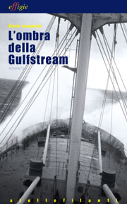

L’ombra della Gulfstream

Tullio Bertani ha tre passioni: le navi, il mare con i suoi ‘abitanti’, il proprio lavoro di motorista. Se fosse solo per lui le traversate oceaniche dei cargo sui quali si trova di volta in volta a navigare, sarebbero fonte di benessere fisico, di orgoglio personale, d’impossibili sogni d’amore.
Ma, come si sa, le navi appartengono a un armatore, hanno un capitano, possono essere delle carrette del mare, battere bandiera ombra, trasportare merci che si surriscaldano facilmente e che non amano la luce del sole; e può capitare, come accade già con l’entrata in scena della Gulfstream, di incontrare un amico sensibile alle ingiustizie sociali, un ambiguo cambusiere, il sosia di un leader mondiale e una donna capace di farti tremare i polsi con uno sguardo.
E’ il primo atto drammatico di una vicenda che seguirà percorsi non sempre lineari, per permettere al protagonista di ritornare alle origini della propria identità, di conoscere i retroscena dell’intrigo principale nel quale suo malgrado è stato coinvolto e di vivere avventure memorabili come l’imbarco sulla ‘nave dei folli’ o l’assedio a un cargo forse più surreale che si possa immaginare.
Poi Tullio Bertani vivrà una dolorosa esperienza in terra d’America in pieno maccartismo e allora l’ombra malefica della Gulfstream, che in realtà non ha mai cessato di gravare su di lui, si addenserà ulteriormente rivelandogli la dimensione reale del gioco in cui il caso l’ha voluto da protagonista. Sulla via del ritorno ritroverà la tranquillità perduta in simbiosi con la natura, ma anche questa dimensione dell’anima, alla infine, si rivelerà provvisoria e nella ritrovata solitudine, senza alibi né maestri, prenderà atto della cruda realtà dei fatti, avvertendo il valore positivo delle avventure vissute nel periodo più burrascoso della sua vita di mare.
In questo romanzo, Dario Lanzardo colloca il processo formativo del personaggio principale, sullo sfondo del rapporto fra la civiltà industriale e la natura come già aveva fatto con il romanzo d’esordio Il Principio di Archimede (Effigie 2006), e con gran parte dei suoi numerosi ‘racconti’ fotografici.
Contenuti: 144 pagine
Editore: Effigie
Anno: 2010